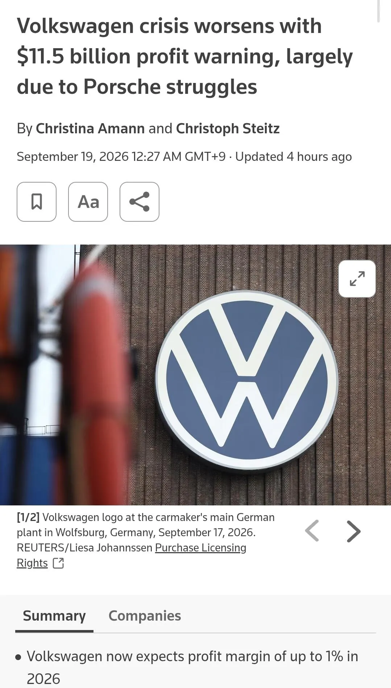

영업이익 5퍼에서 1퍼로 하락
포르쉐 판매부진에
중국차한테 파이 다 뺏김

영업이익 5퍼에서 1퍼로 하락
포르쉐 판매부진에
중국차한테 파이 다 뺏김
중국에서 안팔리기 시작하면 다들 저지랄나는듯
답은 볼-트 바겐이다
아직 적자는 안보고 있네
회생방법=골프 근본사각디자인 복각. 아날로그계기판 및 자연흡기 모델강화. 애매한 어저씨냄새 동글이 suv들 디자인 혁신
가격을 낮춰
옵션이 뭐 수천만원이야
사람들이 사겠냐? 안팔리는게 당연하지
영업익이 1퍼인데 가격을 낮출수가 있나 공장 싹다 중국 인도로 이전해도 힘들듯
포르쉐 유행 한물 갔잖아
일본차에 타격받았던 GM이 겹쳐보이네
흠... 일단 자세한 숫자를 다 찾아본건 아니지만 다른 관점으로도 볼만한게
전기차나 자율주행이나 그런 기술개발이 안되서 그런거야라고 하는건 한국인의 시선같다는 생각이고
현실은 결국 수익성이 악화된게 크다고 봄. 우크라이나-러시아 전쟁으로 유럽경제 자체가 힘든건 확실하고
그 상황속에서 소비가 위축되니까 전반적으로 산업이 침체되는거 하나
두번째는 그 와중에 비싼 노동력이 발목을 잡는 모습? 이젠 독일 내에서 차 만들어서 파는게 거의 불가능하다고 보이더라
그리고 유럽 시장 자체가 일단 차를 그렇게 빠르게 바꾸지 않는 경향이 있고 플레이어가 워낙 많아서 폭바 독점 구도가 없지
그렇다고 수출로 가기에는 프리미엄 브랜드 아니면 경쟁력이 떨어지니 진퇴양난으로 보임
중국내 수익은 확실히 줄어든게 맞는데 이건 뭐 다른 기업들 공통 사항이니
타 기업보다 전기차 자율주행 개발 능력 떨어지는 거 맞음 조 단위 사업 실패함 이게 치명타
포르쉐 911원툴이지 유럽은 대체제가 너무 많음 르노, 스텔란티스 그룹, BMW, 벤츠
아반떼 가격 땜에 1-2천짜리 차 포지션을 잃어버렸다는데
현차입장에선 ㄹㅇ 쉽지않겠단 생각이 드네
국내 차량 생산량은 어느정도 뽑아줘야하는데 생산단가는 높아지고
국내 수요의 현대차 기대치는 있는데 판매가 2천 이하로 땡기면서 인포테인먼트나 안전등급 보장하기가 쉬울런지
1-2천짜리 차는 그 급 쌔차살바에 중고 윗급 사버리니 일부러 퀄 높인듯
국민차 잘가시고~~
렉서스 이번에 나온 es350h 7천부터 시작이더라 ㅋㅋㅋ 연비도 상당하다 했는데 얼마나 뽑아줄지 궁굼하네
죄다 사골 디자인에 내장도 구리고 계기판쪽도 뭔가 좀 별로인데 가격은 계속 올라감. 누가 사냐고.
순순히 비틀 전기차를 내놓으란 말이다
비틀을 왜 단종시킨것이야
한국인들은 왜이렇게 전기차 자율주행에 집착하는거지
폭바 좆망한게 전기차 자율주행이 좆망해서 그런게 아닌데
구미권에서 자율주행 구매율이 개쩌는것도 아니고
걍 전국민이 얼리어답터 기술충임ㅋㅋㅋㅋ
폭바 망하면 안대 지금도 수리비 비싸단 말야
망할 에어컨 하자 내놨으면 나 폐차 할때까진 책임져줘야지
나도 외노자 입장이지만 독일 노동법때문에 독일생산품이 경쟁력을 갖기가 어렵다고 본다. 독일 내 공장 싸게싸게 닫고 인건비 싼 나라로 보내던가, 노동법을 고치던가.. 아님 개쩌는 기술이 갑툭튀하던가.. 진퇴양난이지..
중국에 의존한 게 아니라 수익을 기댈 곳이 중국 밖에 없던 거겠지
개같이 만들든 못생기게 만들든 그게 어느 한 나라에 의존하려는 행동은 아니지 ㅋㅋ
제품이 고객에게 맘에 안 들었을 뿐